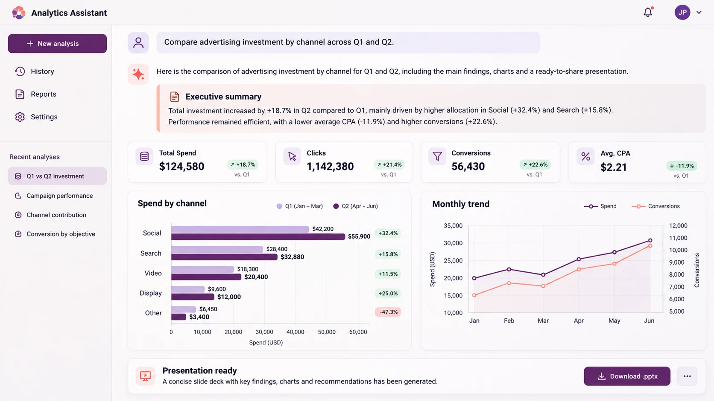
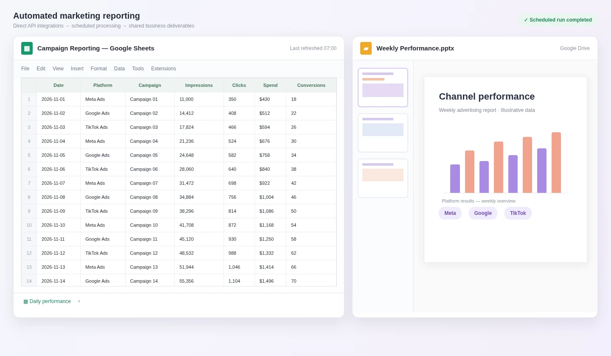
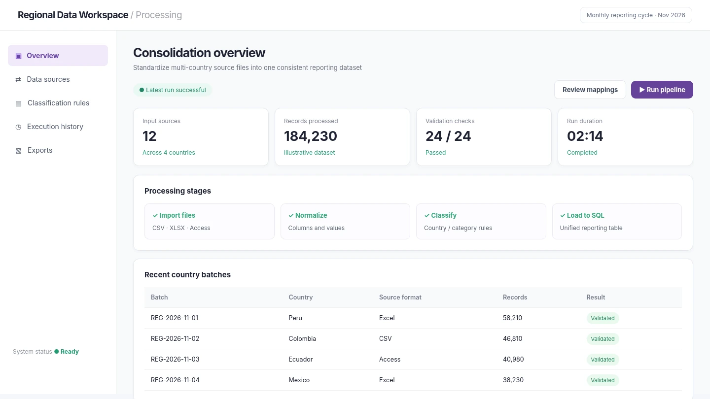
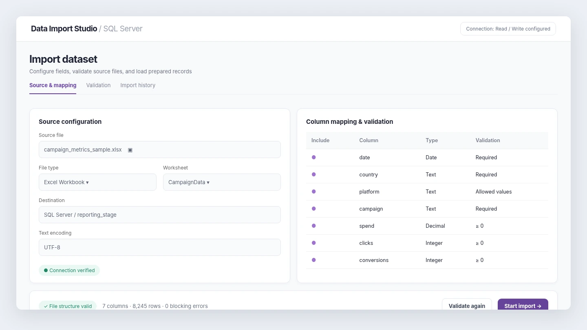

01 / AI APPLICATION
From a question to an executive-ready report.
A conversational assistant that turns business questions into SQL-backed analysis, charts, and executive presentations.
PythonLLMsAI application

AI-powered applications, direct integrations, and automation that turn complex workflows into clear, actionable results.
AI applications and automation built around meaningful business needs.
A conversational assistant that turns business questions into SQL-backed analysis, charts, and executive presentations.

Scheduled Python integrations pull data directly from Meta, Google and TikTok Ads APIs into Google Sheets and presentations stored in Drive.


Automated consolidation and classification of data across countries and source formats.

A practical desktop tool for validating files and importing data into SQL Server.
I'm an Industrial Engineer working across data analytics, process automation, and AI applications. I enjoy turning demanding business workflows into useful tools through Python, APIs, and thoughtful product design.
Open to automation, AI applications, data engineering, and professional collaborations.
Email and LinkedIn are the best ways to reach me.